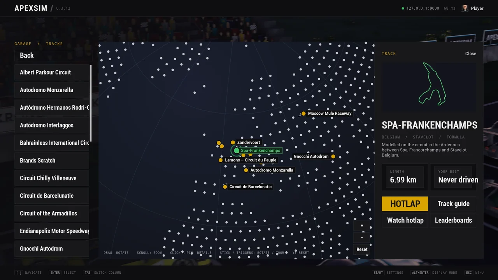

Real ground, real furniture
Per-side width and banking along a surveyed line, the banking laid onto the bends it belongs to.
Elevation from the Copernicus GLO-30 surface model out to an eight-kilometre horizon.
Stands, pit lanes, barriers and woodland laid from OpenStreetMap on 25 of the 29 circuits, with every corner named.
The same road mesh, walls, kerbs and pit lane are baked for the server and the game, checked by checksum on both sides.
Mandarina Bay: Tecpro the whole way round, water either side of its raised bridges, and a start straight lit for the night.
Nürburger Mordschleife, routed over OpenStreetMap: guard rail close to the road, the forest right behind it and the fans' graffiti on the asphalt.


More circuits
Your Assetto Corsa circuits import with every layout, and the track pipeline builds a circuit of your own from a centerline.